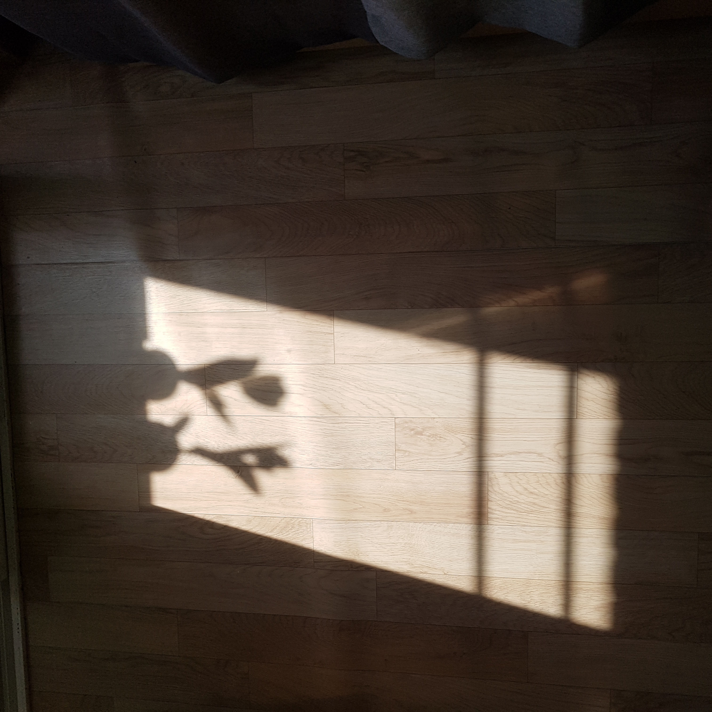
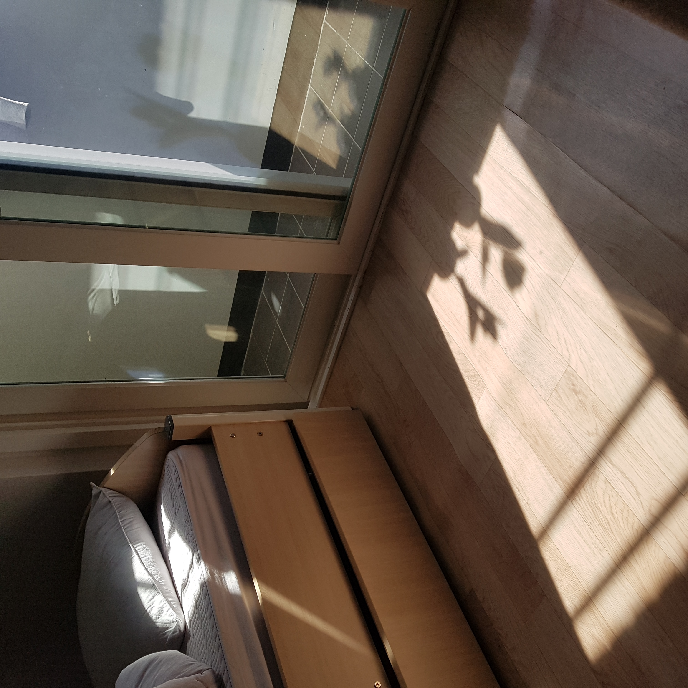
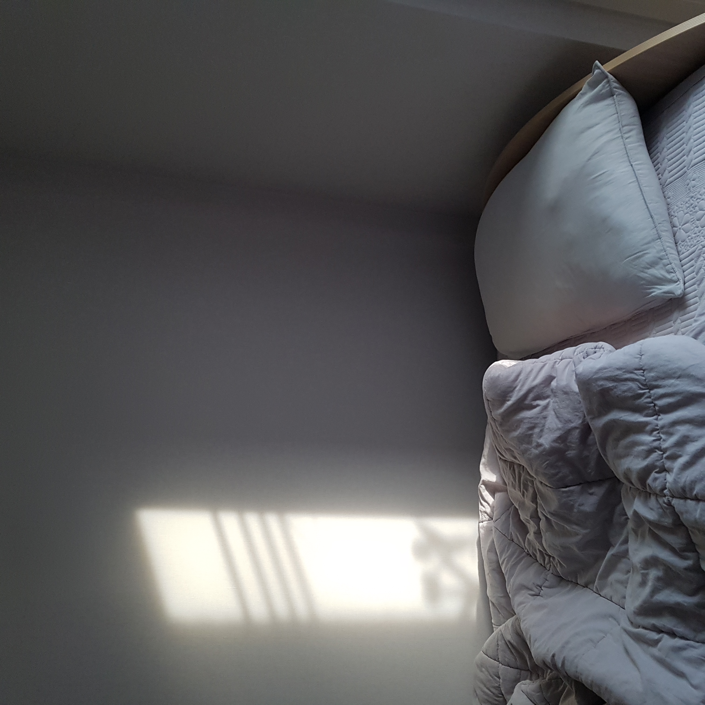
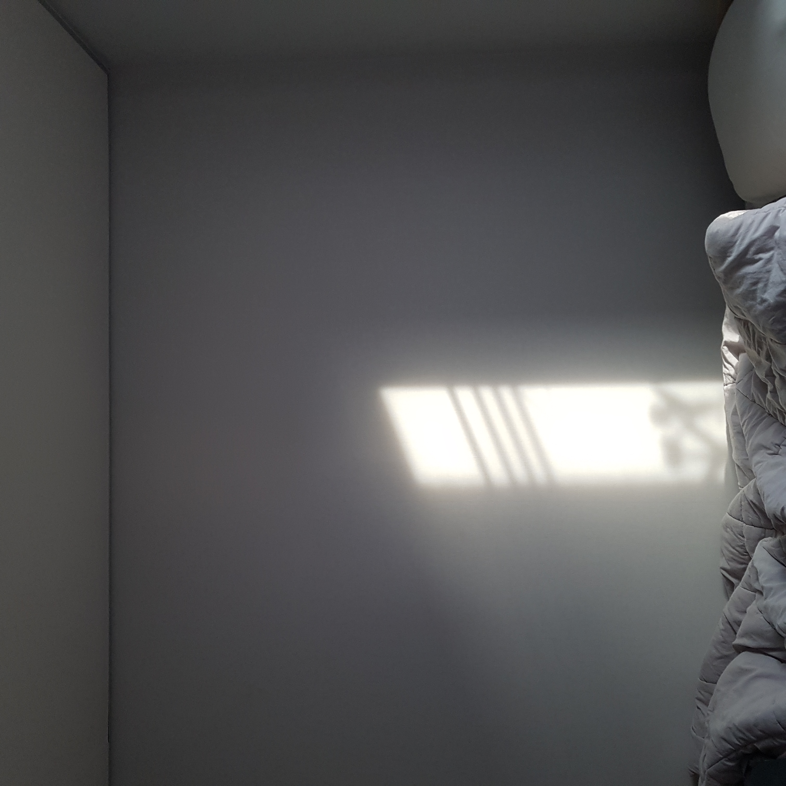

20190409 D+6
오늘은 새로운 즐거움을 발견했다. 방에 볕이 들때 튤립을 창가에 두니 그림자가 너무 예쁘게 생겼다. 고전 유화의 한 장면 같기도 하고 흑백으로 표현된 튤립은 또 다른 감상을 주었다. 그림자가 바뀔까봐 바쁘게 사진을 여러장 찍었다. 그 중에 마음에 드는 한 장은 카톡 프로필 사진으로 설정했더니 단톡방에서 친구들이 칭찬을 주었다. 어떤 미술관에 가서 찍은 줄 알았다고 하는 친구도 있었다. 튤립의 다양한 얼굴들이 부디 나에게 어떤 영감을 주어 나의 내면이 풍부해지기를 바란다.
오늘은 새로운 즐거움을 발견했다. 방에 볕이 들때 튤립을 창가에 두니 그림자가 너무 예쁘게 생겼다. 고전 유화의 한 장면 같기도 하고 흑백으로 표현된 튤립은 또 다른 감상을 주었다. 그림자가 바뀔까봐 바쁘게 사진을 여러장 찍었다. 그 중에 마음에 드는 한 장은 카톡 프로필 사진으로 설정했더니 단톡방에서 친구들이 칭찬을 주었다. 어떤 미술관에 가서 찍은 줄 알았다고 하는 친구도 있었다. 튤립의 다양한 얼굴들이 부디 나에게 어떤 영감을 주어 나의 내면이 풍부해지기를 바란다.